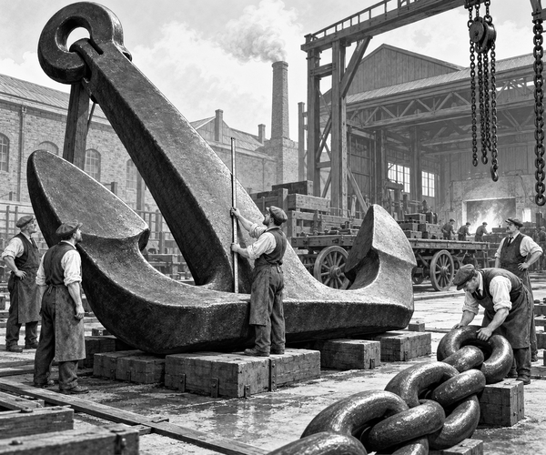

It was Sunday, 30 April 1911.
A crowd gathered in Netherton.
They were waiting beside a Black Country ironworks.
The gates opened.
Out came an anchor.
But this was not an ordinary anchor.
It had been made for Titanic.
The great steel anchor rested on a heavy wooden wagon.
Strong chains held it in place.
It was longer than three tall adults lying head to toe.
It weighed more than fifteen tons.
Anchor fact: Titanic's centre anchor was over five and a half metres long. It was one of the largest hand-forged anchors of its time.
Workers had joined and shaped its huge metal parts.
They had tested it at the ironworks.
Now it had to reach Titanic's shipyard in Belfast.
First, it needed to reach Dudley railway station.
The station was about two miles away.
There were cobbled streets and steep hills between them.
One horse could not pull such a load.
Two horses could not pull it.
The final team had twenty powerful horses.
They stood in pairs along the road.
Leather harnesses joined them to the wagon.
The handlers checked every strap.
Then the leading horses stepped forwards.
Clip. Clop. Clip. Clop.
The harness chains tightened.
The enormous wagon creaked.
Slowly, its wheels began to turn.
The anchor was moving.
People watched from the sides of the road.
Children counted the horses.
Eight. Twelve. Sixteen. Twenty!
The road climbed towards Dudley.
The horses leaned into their harnesses.
The handlers kept the team calm and steady.
No one tried to hurry.
At last, the wagon reached the railway goods yard.
The horses stopped.
The first part of the journey was complete.
Journey fact: After Dudley, the anchor travelled by train to Fleetwood. A ship then carried it across the Irish Sea to Belfast.
In Belfast, workers took the anchor to the shipyard.
Titanic's steel bow towered above them.
The anchor was fitted into a special well near the front of the ship.
A strong crane and wire rope could move it when needed.
The giant anchor had travelled by horse, rail and sea.
It was built for one of the biggest ships in the world.
Yet its first great journey began at walking speed.
Twenty horses had helped it on its way.
1. How many horses were in the final team?
2. Why were so many horses needed?
3. What carried the anchor after Dudley?